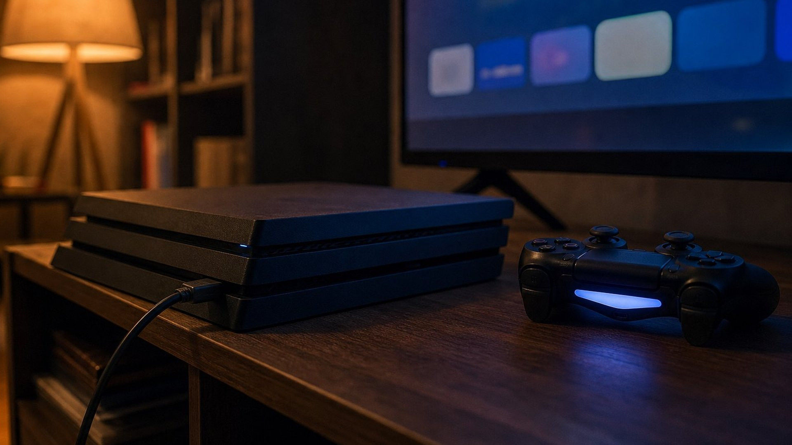
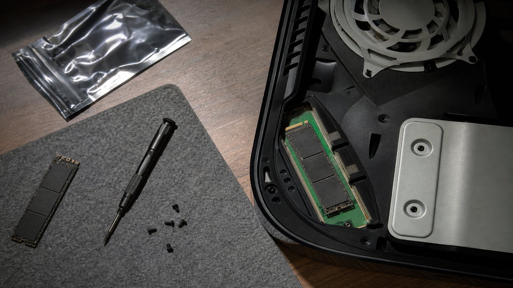
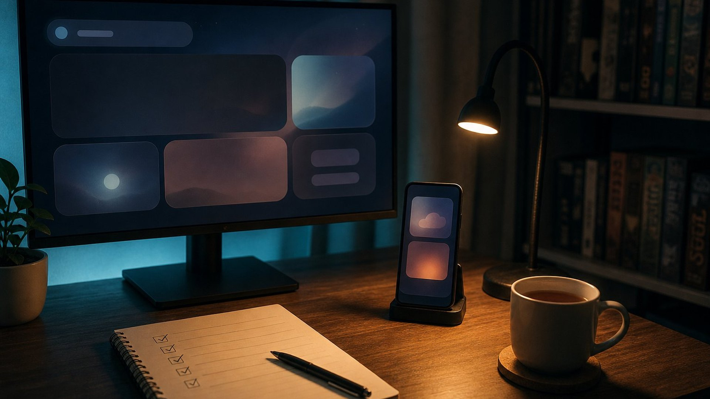
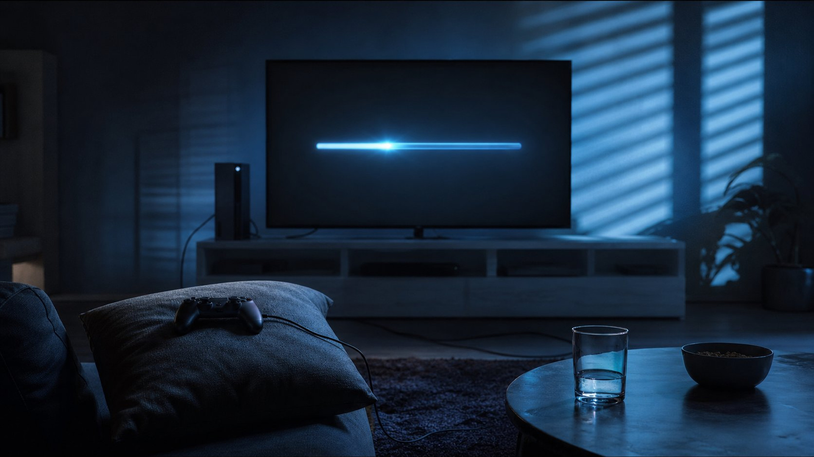
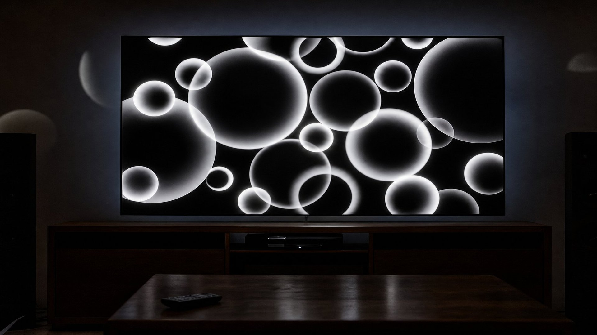
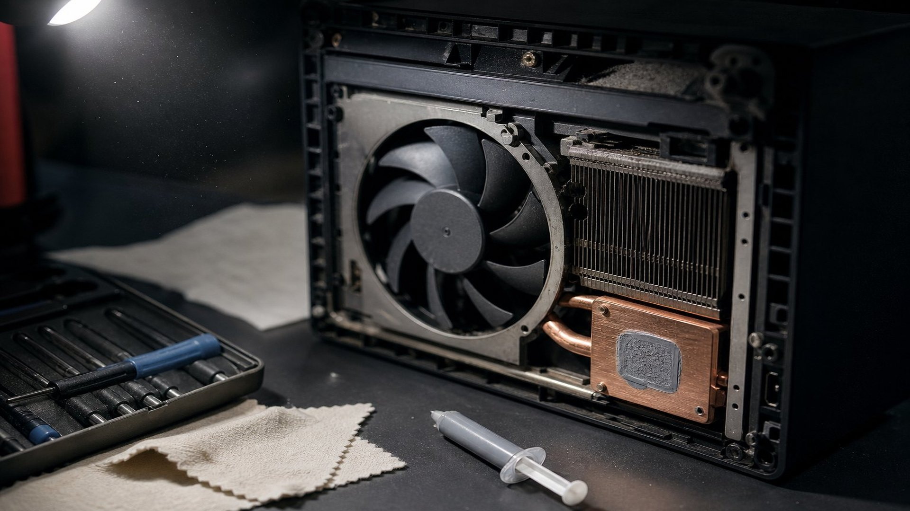

S4 · G7 · FAQ de lancement
FAQ de lancement
Six réponses qui comptent, et une liste assumée de ce qu'on ne sait pas encore. Prix, plateformes, préchargement, fréquences d'images mesurées : tout est daté et sourcé.
Les six réponses qui comptent
La veille du lancement, les mêmes questions reviennent. Voici les réponses vérifiées, avec pour chacune la mention de ce qui est officiel et de ce qui relève de la mesure technique.
| Question | Réponse | Réf. |
|---|---|---|
| Quand ? | Jeudi 19 novembre 2026. | FAQ-01 |
| Sur quoi ? | PS5 (améliorée sur PS5 Pro) et Xbox Series X|S. Rien d'autre. | FAQ-02 |
| Combien ? | 79,99 $ en Standard, 99,99 $ en Ultimate (tarif de référence annoncé). | FAQ-03 |
| Quelle taille ? | Jusqu'à 212 Go selon la machine. | FAQ-05 |
| Quelle fréquence ? | 30 fps sur toutes les consoles, sans exception. | FAQ-07 |
| Et le PC ? | Non annoncé. Aucune date, aucune fourchette. | FAQ-11 |
Plateformes : ce qui est confirmé, ce qui ne l'est pas
Confirmé
PlayStation 5 et PlayStation 5 Pro (améliorée), Xbox Series X et Xbox Series S. FAQ-02
Non annoncé
PC. Ni date, ni fenêtre, ni configuration. Aucune source officielle ne l'évoque. FAQ-11
Exclu
Ni PS4, ni Xbox One, ni Switch 2. Le jeu n'est pas prévu sur ces machines.
Le streaming est un cas à part : le jeu est accessible via Xbox Cloud Gaming sur Xbox One et Xbox Series X|S depuis 1 h du matin (heure de l'Est) le 19 novembre, et prend en charge le Remote Play. Cela permet d'y jouer sur du matériel ancien, mais ce sont des fonctions de diffusion à distance — pas une version Xbox One du jeu. FAQ-10
FAQ-01
Xbox One, PC, cloud : la question des plateformes sans raccourci
Trois confusions circulent depuis novembre. Elles coûtent soit un achat inutile, soit une soirée perdue à attendre une version qui n'existe pas.
| Support | Réalité | Détail vérifiable |
|---|---|---|
| Xbox One | Pas de version native — cloud uniquement | Xbox Cloud Gaming à partir de 1 h du matin (heure de l'Est) le 19/11, rendu sur les serveurs au préréglage Series S, plafonné à 30 fps. LAU-39 |
| Abonnement Game Pass | Pas nécessaire, mais le quota d'heures existe | 15 h/mois en Ultimate, 10 h en Premium, 5 h en Essential ; heures supplémentaires à l'achat, et depuis le 11/11 du temps de cloud vendu sans abonnement dans les marchés pris en charge. LAU-40 |
| PC | Rien : ni version, ni streaming | Microsoft a démenti tout droit exclusif et toute diffusion vers PC ; Rockstar n'a annoncé aucune version PC. LAU-39 FAQ-11 |
| Achat du jeu | Obligatoire, séparé | Le cloud ne fait pas entrer GTA VI dans le catalogue Game Pass : l'achat reste distinct d'un abonnement. LAU-39 |
LAU-40

Éditions et contenu
Les montants ci-dessous sont les prix de référence annoncés, en dollars. Aucun tarif en euros n'est publié sur ce site : le prix final dépend du store, de la région et des taxes, et doit être vérifié sur votre propre boutique avant tout achat.
| Édition | Prix de référence | Support | Contenu |
|---|---|---|---|
| Standard | 79,99 $ | Numérique ou boîte avec code | Le jeu, sans contenu additionnel. |
| Ultimate | 99,99 $ | Numérique uniquement | Véhicules, armes, tenues et boutiques exclusives. FAQ-03 |
| Mise à niveau Ultimate | ≈ 20 $ | Numérique, séparément | Pour passer de Standard à Ultimate sans racheter. |
| Coffret « The Goodtime State » | 399,99 $ | Collector physique | Objets de collection, sans le jeu. FAQ-06 |
- Pas d'édition « Special » — deux éditions, plus une mise à niveau, et c'est tout.
FAQ-04 - Pas de disque — la version boîte contient un code de téléchargement. En boutique depuis le 12 novembre.
- Bonus de précommande — pack Vintage Vice City avant le 20 novembre, plus un mois de GTA+ sur les précommandes numériques.
FAQ-06 - Pas sur Game Pass ni PlayStation Plus — le jeu n'y est pas inclus au lancement.
FAQ-06
Stockage : combien libérer, vraiment
C'est la question la plus posée de la semaine, et la réponse est plus large que le chiffre officiel. Voici les trois chiffres à connaître, et un conseil que personne ne donne.
| Chiffre | Valeur | Source |
|---|---|---|
| Espace requis (Rockstar) | jusqu'à 212 Go selon l'appareil | Newswire du 3/11 |
| Paquet Xbox Series X|S | ≈ 225 Go | catalogue Microsoft, 17/11 |
| Empreinte constatée après correctifs | ≈ 213 Go | relevés presse |

Sauvegarde, veille et le piège du Quick Resume
Trois questions pratiques reviennent dans la dernière heure avant le lancement, et deux d'entre elles ont une réponse contre-intuitive sur Xbox.
| Situation | PS5 | Xbox Series X|S |
|---|---|---|
| Mettre en pause | Bouton Options ; le temps du jeu s'arrête, y compris pendant les cinématiques. FAQ-12 | Bouton Menu, à droite du bouton Share. FAQ-12 |
| Laisser tourner la nuit | Mode repos : le téléchargement continue, la partie est suspendue. Couper l'alimentation perd la suspension. FAQ-13 | Veille : même principe, mais Quick Resume restaure l'état exact, y compris les réglages sensibles. FAQ-13 |
| Reprendre une « session propre » | Relancer le jeu normalement. | Quitter le jeu (Guide Xbox → Menu → Quitter), sinon Quick Resume reprend la mémoire telle quelle. FAQ-13 |
FAQ-13

Préchargement et espace disque
Le préchargement est ouvert depuis le 10 novembre 2026 : à minuit heure locale sur PS5, à 0 h GMT pour le monde entier sur Xbox Series X|S. FAQ-05
Jusqu'à 212 Go
Selon la plateforme. Prévoyez de la marge : une mise à jour de lancement se télécharge en plus.
À faire avant 19/11
Lancer le téléchargement la nuit : les serveurs seront saturés le jour du lancement, pas la veille.
Sur Xbox
Le préchargement a démarré à 0 h GMT pour le monde entier, pas à l'heure locale.

FAQ-11
Réglages : la console, la télévision, puis le jeu
Une seule vérification n'est pas un réglage mais un prérequis : le firmware PS5 26.07-14.23.00, obligatoire pour lancer le jeu depuis le 17/11. La liste complète du soir de sortie est sur la page Outils. PRESSE · 19/11
Trois couches se cumulent, et l'erreur la plus fréquente est de commencer par la mauvaise. Réglez la console, puis la télévision, puis seulement le jeu : c'est dans cet ordre que chaque réglage produit son effet. REG-12
| Couche | Réglage | Valeur conseillée | Pourquoi |
|---|---|---|---|
| Console | Résolution | Automatique (PS5) / 4K UHD si compatible (Xbox) | Évite un suréchantillonnage inutile |
| HDR | Activé, puis calibré (PS5 : Réglages → Écran et vidéo ; Xbox : Calibrer le HDR pour les jeux) | Le calibrage compte plus que l'activation | |
| VRR / ALLM / 120 Hz | Automatique si l'écran le permet | Ne débloque pas plus de 30 fps, mais réduit la latence | |
| Télévision | Mode image | Jeu | Réduit le traitement et la latence |
| Interpolation de mouvement | Désactivée (TruMotion, MotionFlow, Auto Motion Plus) | Sur un jeu à 30 fps, elle crée des artefacts | |
| HGiG | Activé si disponible | Laisse la console gérer le tone mapping | |
| Jeu | Flou de mouvement | Faible ou désactivé | Lisibilité en conduite rapide |
| Grain de film / aberration chromatique | Désactivés | Image plus nette | |
| Mini-carte | Classique | Reste visible : indispensable pour fuir | |
| Caméra cinématique (accident, mise à mort) | Accident : désactivée ; mise à mort : au goût | Évite les ruptures de rythme involontaires |

Pour les réglages de confort qui ne sont pas de l'image — sensibilité, zone morte, vibrations, gâchettes adaptatives, sous-titres, taille du texte — voir la page Confort et accessibilité.
30 fps partout : ce que ça veut dire vraiment
C'est la question la plus posée, et la réponse est ferme : Rockstar vise 30 fps sur toutes les consoles actuelles, PS5 Pro incluse. Aucun mode 60 fps, aucun mode 40 fps n'est annoncé. FAQ-07
| Machine | Résolution interne | Rythme observé | Pire cas |
|---|---|---|---|
| PS5 | 1440p | 33,3 ms réguliers, soit 30 fps | Chutes à 23 fps en action lourde soutenue FAQ-08 |
| PS5 Pro | 1440p + PSSR | 30 fps quasi constant, cadence parfaite | 24 fps ponctuels FAQ-08 |
| Series X / S | Non publié | 30 fps annoncés | Pas de mesure publique FAQ-11 |
- Ce que la PS5 Pro apporte — l'upscaling PSSR, qui « passe pour du 4K natif », et les ombres ray-tracées, exclusives à cette machine. Pas de gain de fréquence.
FAQ-09 - Ce qu'elle n'apporte pas — un mode 60 fps. Le coût du rendu ne le permet pas sur cette génération.
- Le streaming ne change rien — Xbox Cloud Gaming diffuse la version console : la fréquence reste celle de la console.
FAQ-10
FAQ-08
Fiabilité : ce qu'il faut vérifier avant de croire un chiffre
Beaucoup de « données » circulent déjà, et beaucoup sont inventées. Quatre vérifications suffisent à trier — et elles s'appliquent à ce guide comme aux autres.
Les quatre réflexes
- Un chiffre sans source datée n'est pas un chiffre : demandez l'URL et la date.
- Les revenus, prix de biens et rendements horaires ne sont confirmés par personne : méfiance totale.
- Les listes de codes de triche fonctionnels n'existent pas, dans aucune source sérieuse.
- Les trophées « fuités » et les noms de missions circulent avant d'être vérifiés : préférez le jeu lui-même.
Comment ce guide applique la règle
- Chaque fait porte un identifiant et une URL source consultable.
- Les statuts sont visibles : OFFICIEL PRESSE PRESSE · 18/11 ESTIMATION.
- Ce qui n'est pas confirmé est nommé comme tel, jamais glissé dans une affirmation.
- Les illustrations sont signalées : aucune image IA n'est présentée comme officielle.

Ce qu'on ne peut pas encore répondre
Cette section existe parce qu'une FAQ honnête doit lister ses trous. Tout ce qui suit n'a aucune réponse publique au 18 novembre 2026, et cette page n'en inventera aucune. FAQ-11
- Version PC — ni date, ni fenêtre, ni configuration requise.
- Performances Xbox — résolution Series S et Series X non publiées, mesures indépendantes non disponibles.
- Carte complète — dimensions officielles et liste exhaustive des régions non publiées.
- Multijoueur — aucune date, aucune forme annoncée.
- Game Pass / PlayStation Plus — aucune inclusion annoncée.
- Mode 60 fps ultérieur — aucun patch annoncé. Ne pas l'attendre pour acheter.
Et le mode en ligne ?
Le lancement est un lancement solo : aucune date n'est annoncée pour un mode en ligne. La question n'est pas « quand », mais « sous quelle forme » — et cette réponse n'existe pas au 18/11/2026. EN ATTENTE · 19/11
Statuts de cette page
- OFFICIEL Sortie le 19 novembre 2026 sur PS5 et Xbox Series X|S.
- PRESSE · 18/11 Les chutes à 23 fps sont mesurées, pas prédites : à relativiser selon votre écran.